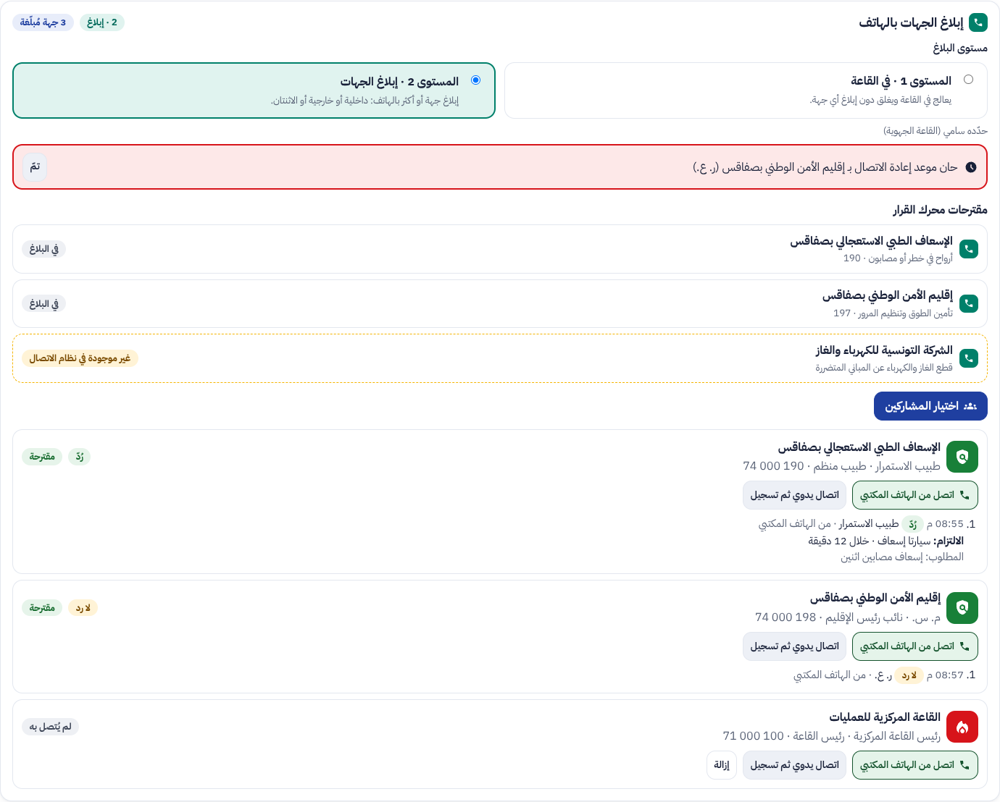
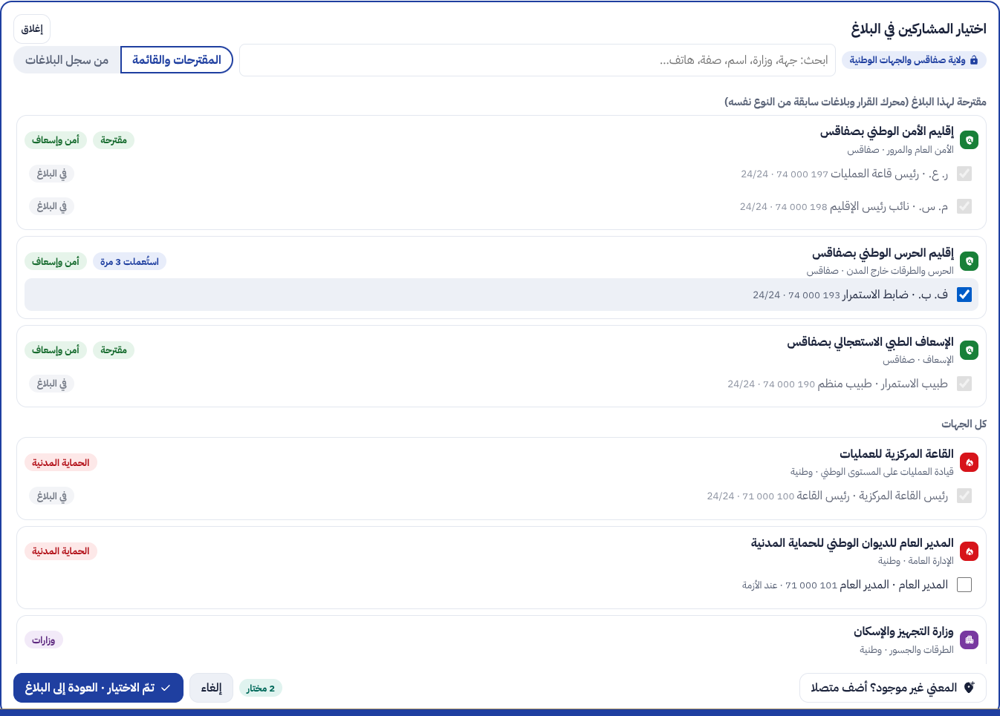
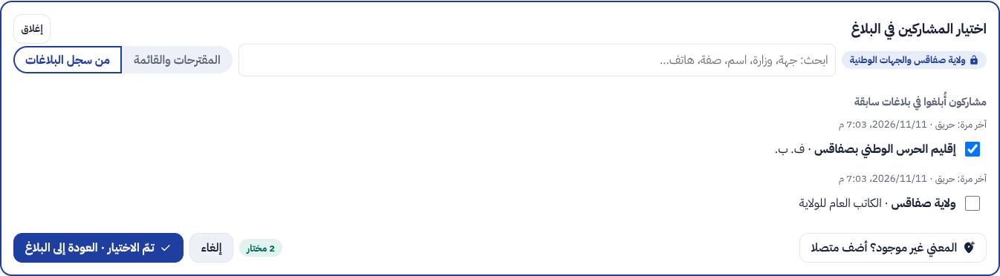
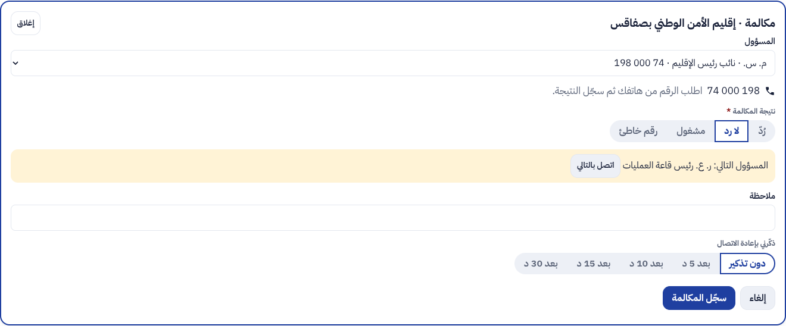
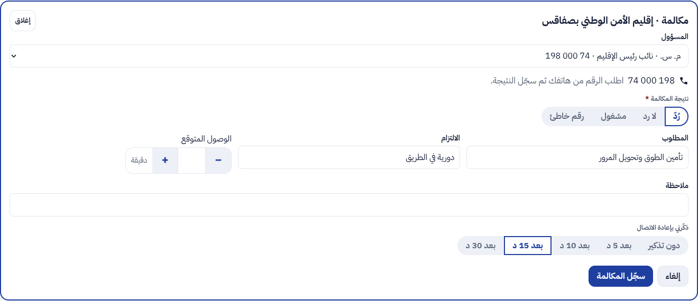
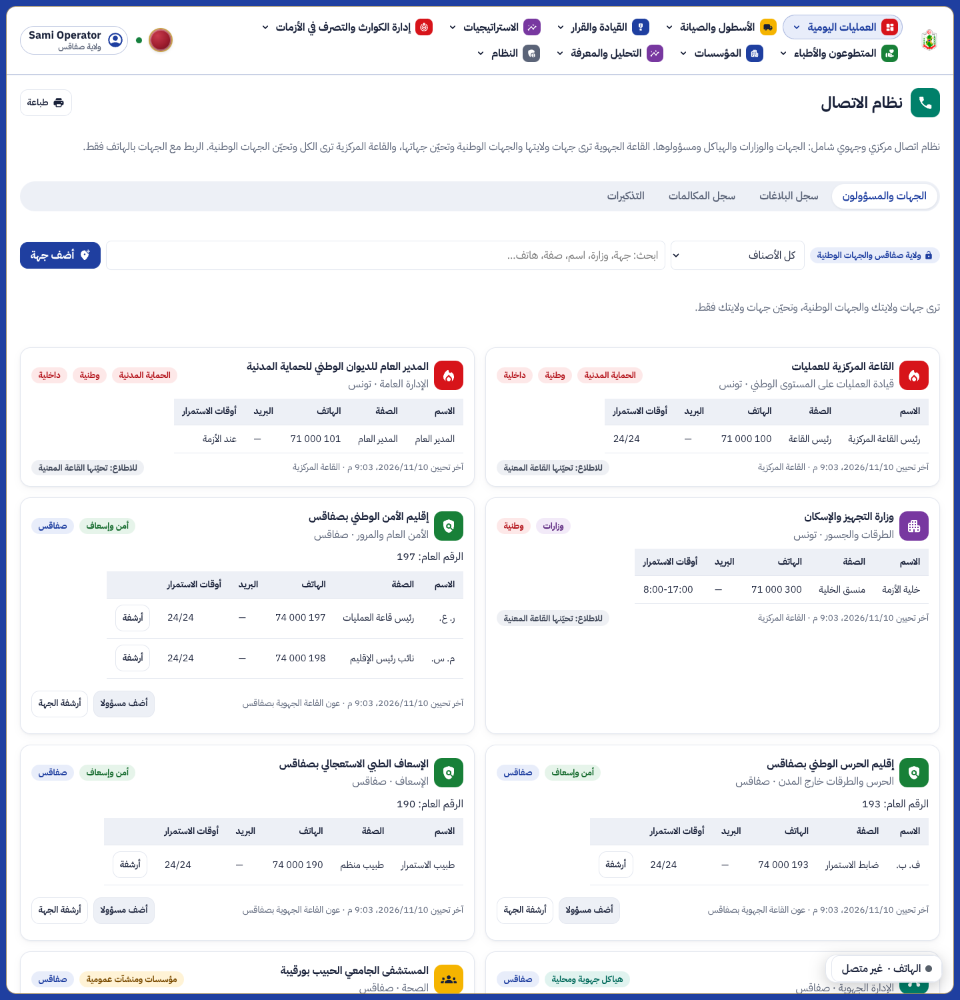
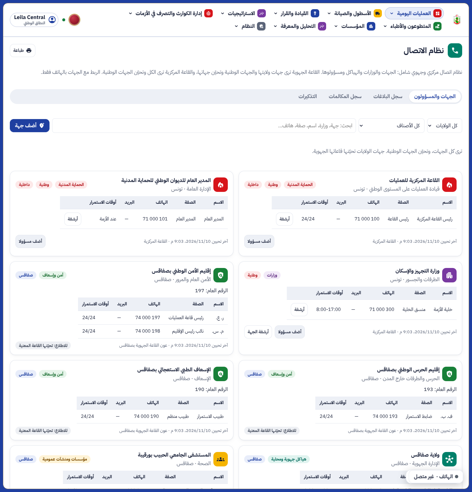
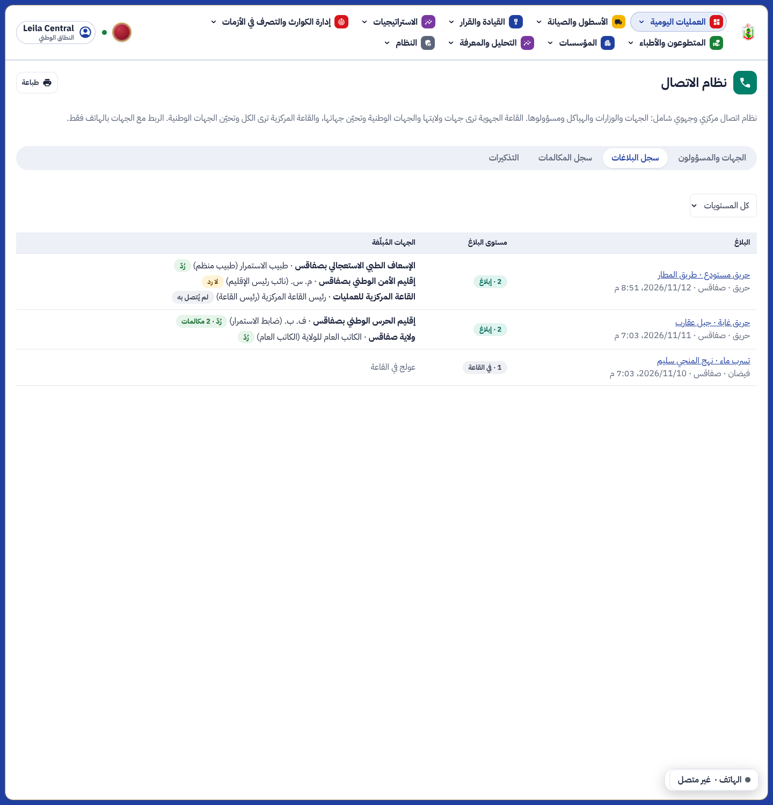
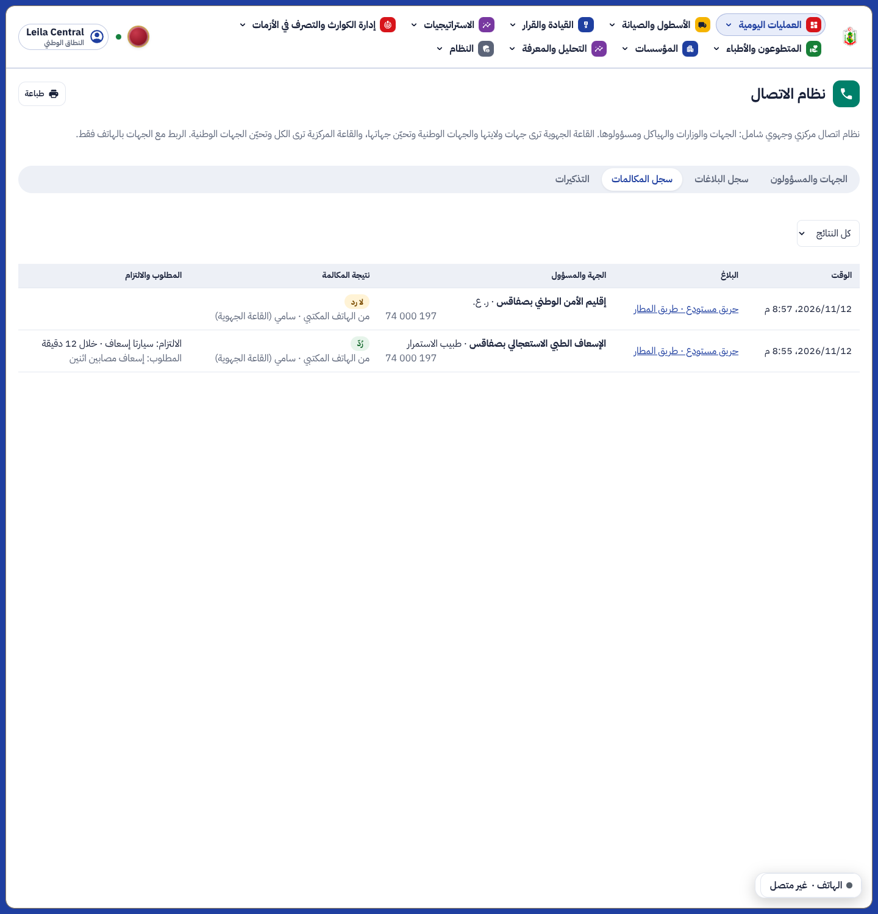

ء-حماية e-Himaya
تقرير المرحلة OS20: مستوى البلاغ وإبلاغ الجهات بالهاتف، ونظام اتصال مركزي وجهوي شامل
1. ما أُنجز
- مستوى البلاغ عند فتحه: المستوى 1 يعالج في القاعة ويغلق دون إبلاغ أي جهة؛ المستوى 2 تُبلَّغ فيه جهة أو أكثر، داخلية (رئيس القاعة المركزية، المدير العام للديوان الوطني للحماية المدنية) أو خارجية (190، 193، 197، الستاغ، الغابات…) أو الاثنتان.
- مقترحات محرك القرار: الجهات التي يقترحها المحرك حسب نوع الحادثة وتصنيفها والخطر، تُطابَق مع جهة نظام الاتصال في ولاية البلاغ، وإلا الجهة الوطنية؛ وإن لم توجد تظهر «غير موجودة في نظام الاتصال» برقمها العام فيضيفها العون.
- اختيار المشاركين: القائمة الأولية هي المقترحات والجهات المستعملة في بلاغات سابقة من النوع نفسه، ثم كل الجهات. البحث يرفع النتائج إلى أعلى القائمة ويبرز الكلمات. خيار «من سجل البلاغات» للاختيار مباشرة. اختيار عدة جهات معا ثم «تمّ الاختيار · العودة إلى البلاغ». في القاعة المركزية تُختار الولاية أولا.
- الربط بالهاتف فقط: الاتصال من الهاتف المكتبي للقاعة أو يدويا، ثم تسجيل النتيجة (رُدّ، لا رد، مشغول، رقم خاطئ) والمطلوب والالتزام والوصول المتوقع وملاحظة وتذكير بإعادة الاتصال. عند عدم الرد يُقترح المسؤول التالي.
- نظام اتصال مركزي وجهوي شامل: أي جهة أو وزارة أو هيكل: الصنف، مجال النشاط، العنوان والموقع، الرقم العام، وأسماء المسؤولين وصفاتهم وهواتفهم وبريدهم وأوقات استمرارهم، وآخر تحيين ومن قام به. القاعة الجهوية ترى جهات ولايتها والجهات الوطنية وتحيّن جهات ولايتها؛ القاعة المركزية ترى الكل وتحيّن الجهات الوطنية. المعني غير الموجود يُضاف من البلاغ أو لاحقا.
- المشاركون يبقون في سجل البلاغ: كل جهة أُبلغت تبقى مع البلاغ ونتيجة آخر مكالمة، في «سجل البلاغات»، ومعها «سجل المكالمات» و«التذكيرات».
أُبعد الربط الآلي (واجهة برمجية، ويب هوك، رابط SMS، الاستلام الآلي) بطلب يامن، وبقي في قائمة الأعمال المستقبلية.
2. لقطات من المنظومة
البلاغ: المستوى 2، المقترحات، الجهات المبلَّغة ومكالماتها، وتذكير حان موعده

اختيار المشاركين: المقترحة أولا، واختيار عدة جهات

الاختيار من سجل البلاغات

تسجيل مكالمة: لا رد واقتراح المسؤول التالي

تسجيل مكالمة: رُدّ، المطلوب والالتزام والوصول والتذكير

نظام الاتصال في القاعة الجهوية بصفاقس

نظام الاتصال في القاعة المركزية

سجل البلاغات والجهات المبلَّغة

سجل المكالمات

3. الصلاحيات
| العمل | من | الزر |
|---|
| قراءة نظام الاتصال وجهات البلاغ ومكالماته والسجلات والتذكيرات | أدوار القراءة في العمليات | liaison |
| إضافة الجهات والمسؤولين وتحيينهم وأرشفتهم | عون القاعة، رئيس العمليات، في القاعة صاحبة الجهة | liaison.contacts |
| مستوى البلاغ، إضافة الجهات وإزالتها، تسجيل المكالمات، إغلاق التذكيرات | عون القاعة، رئيس العمليات | liaison.inform |
الأمان على مستوى الأسطر في قاعدة البيانات يفرض قاعدة الولاية: القاعة الجهوية لا ترى جهات ولاية أخرى ولا بلاغاتها.
4. الاختبارات
- الخادم: كامل الاختبارات ناجحة (1296)، منها 3 جديدة في
tests/test_liaison.py تغطي قاعدة الولاية والمستويين والاختيار المتعدد والمكالمات والتذكيرات والسجل والمختار. ruff وmypy نظيفان، والترحيل يصعد وينزل.
- اللوحة: 722 اختبارا ناجحا (5 جديدة للوحة البلاغ والترتيب في البحث)، وفحص الأنواع والتدقيق نظيفان. المتصفح:
e2e/phase-os20.spec.ts (3 اختبارات، منها هذه اللقطات).
5. ما بقي
- إدخال مسؤولي الجهات وأرقامهم الحقيقية من القاعات (لا رقم شخصي في البذرة).
- ربط آلي مع الجهات التي تملك منظومة (واجهة برمجية أو رسائل)، إن طُلب لاحقا.
الوثائق الخمس الكبرى تُحدَّث معا في نهاية المرحلة كما في docs/phase-end.md.